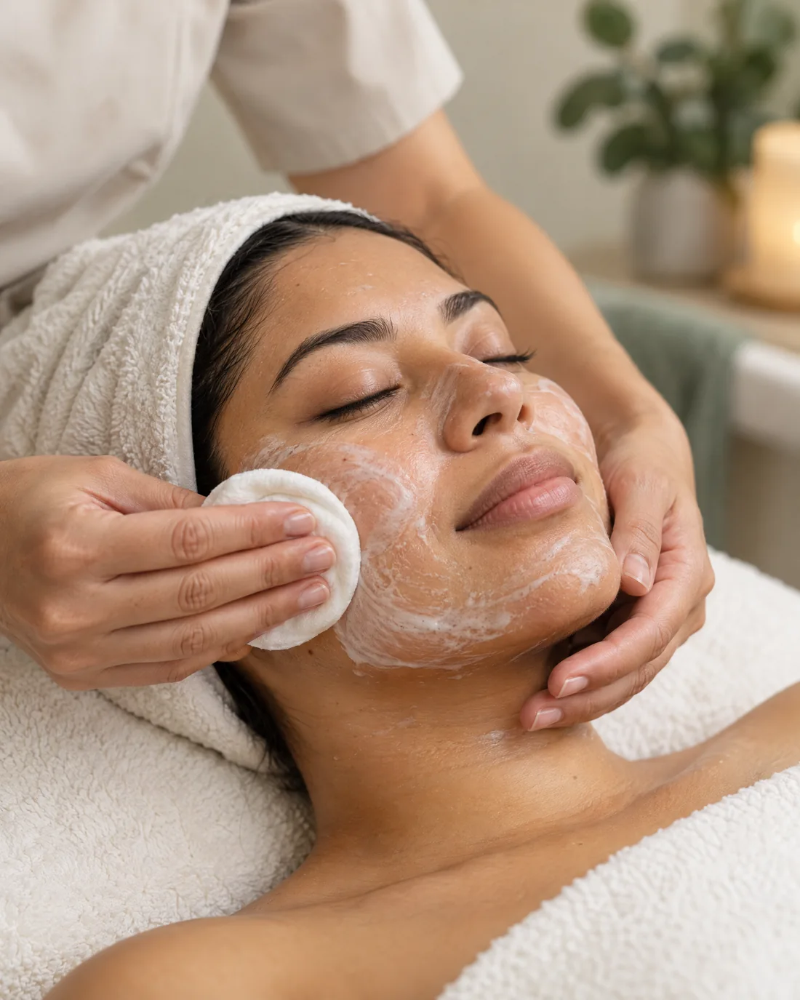
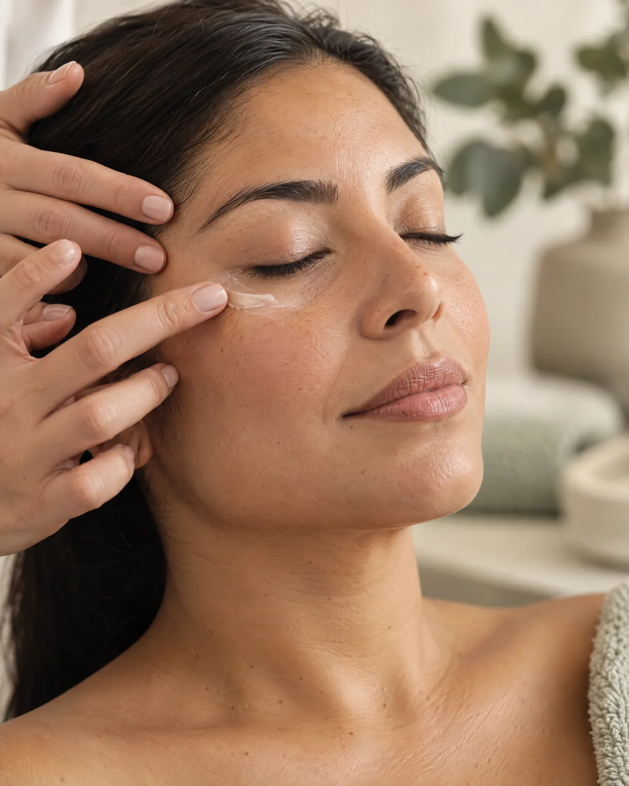
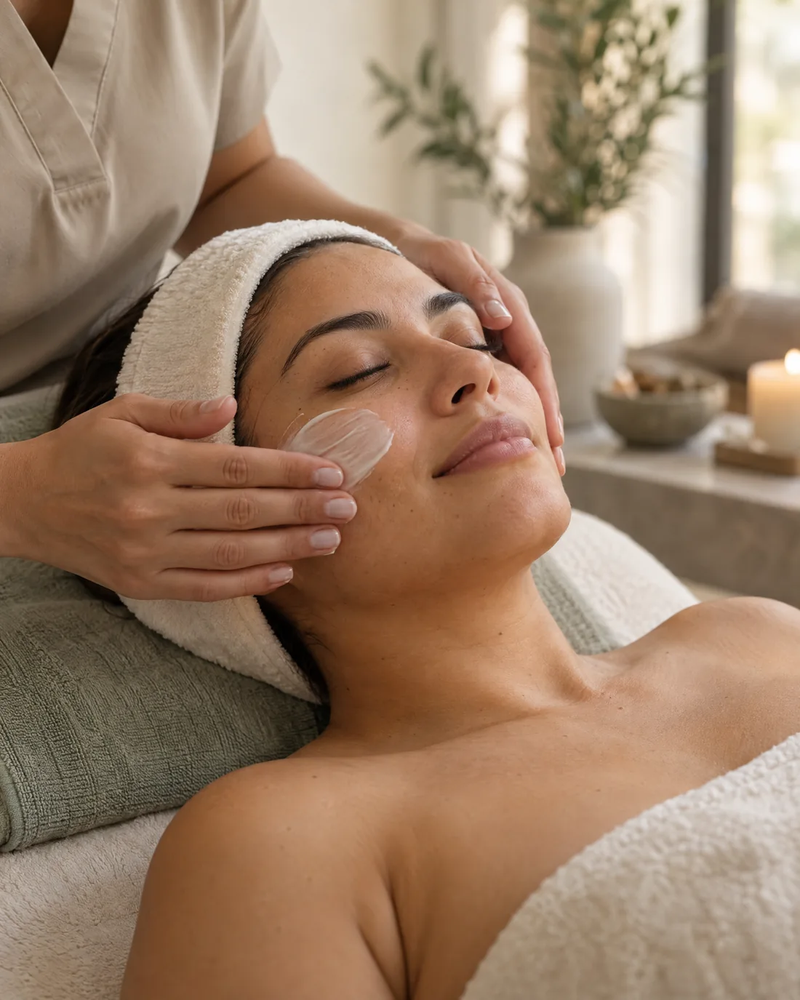

Cuidado facial
Servicios enfocados en el bienestar y mantenimiento de la piel.
CUIDADO FACIAL · TORREÓN
Un espacio dedicado al cuidado facial, con opciones para distintas necesidades de la piel. Conoce los tratamientos y consulta cuál puede ser adecuado para ti.
En Shaissa Clínica Facial, el cuidado parte de escuchar lo que buscas y conocer las necesidades de tu piel. La información del negocio menciona atención para acné, piel grasa, manchas, deshidratación, arrugas y líneas de expresión.
Escríbenos para conocer los servicios disponibles y resolver tus dudas antes de agendar.
Conoce la clínicaServicios enfocados en el bienestar y mantenimiento de la piel.
La clínica reporta atender diferentes tipos y condiciones de piel.
Un espacio de cuidado facial en el Centro de la ciudad.
SERVICIOS
Conoce los servicios reportados y contáctanos para preguntar por disponibilidad, recomendaciones y detalles de cada tratamiento.

01 / 03HIGIENE FACIAL
Un servicio de limpieza facial para acompañar tu rutina de cuidado. Consulta si es la opción indicada para las necesidades de tu piel.
Preguntar por WhatsApp
02 / 03CUIDADO FOCALIZADO
Un tratamiento facial dedicado a la zona del contorno de ojos. Escríbenos para conocer en qué consiste y consultar disponibilidad.
Preguntar por WhatsApp
03 / 03CUIDADO PERSONAL
La clínica ofrece tratamientos faciales para distintas necesidades. Consulta por opciones relacionadas con hidratación, manchas, piel grasa o líneas de expresión.
Preguntar por WhatsAppLa información del negocio también menciona acné, piel grasa, manchas, deshidratación, arrugas y líneas de expresión. La disponibilidad y las opciones específicas se confirman directamente con la clínica.
PRODUCTOS · INFORMACIÓN POR CONFIRMAR
La información recibida menciona la línea profesional Biobel entre los productos utilizados o comercializados. Pregunta directamente a la clínica qué productos están disponibles y cuáles pueden formar parte de tu rutina.
Cuidado facial
en Torreón.
LA CLÍNICA
Shaissa Clínica Facial es un establecimiento dedicado al cuidado facial en Torreón. La descripción pública del negocio menciona tratamientos específicos para distintos tipos de piel, dirigidos a mujeres y hombres.
Si tienes dudas sobre un servicio, sus pasos o si se ajusta a lo que buscas, puedes consultarlo directamente con la clínica antes de tu visita.
Hablemos por WhatsAppTU PRÓXIMO PASO
Resolver tus dudas es sencillo. La disponibilidad se confirma directamente con la clínica.
Revisa las opciones de cuidado facial reportadas.
Cuéntanos qué información te gustaría recibir.
Pregunta por horarios y acuerda directamente tu cita.
ENCUÉNTRANOS
Contáctanos para consultar tratamientos y disponibilidad antes de visitarnos.
Escribir por WhatsAppAv. Juárez 101, esquina con Calle Degollado,
Col. Centro, Torreón, Coahuila, México.
10:00–14:00
16:00–20:00
Los días de atención no están especificados. Una ficha externa consultada muestra un horario distinto; confirma la disponibilidad por WhatsApp antes de acudir.
CUIDADO FACIAL EN TORREÓN
Estamos para orientarte sobre los servicios disponibles y resolver tus dudas.
Consultar por WhatsApp